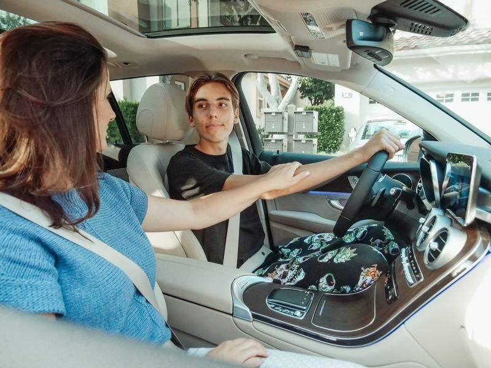

Driving school
·
6 min read
How we got to a 94% first-attempt pass rate
A look at the curriculum and feedback loop behind our pass-rate numbers.

Jul 28, 2026 · Head of Driving Programs

A look at the curriculum and feedback loop behind our pass-rate numbers.
Jul 28, 2026 · Head of Driving Programs

Three years ago our first-attempt pass rate sat at 78% — respectable, but not remarkable. Getting to 94% didn't come from a single change; it came from treating every lesson as a data point instead of a calendar entry.
Logging completed hours against a licensing requirement is straightforward. The harder problem was making that number mean something: which hours were spent on parallel parking versus highway driving, and where a student was still shaky.
So we asked instructors to leave a short note after every session — not a grade, just an observation. "Confident on hills, needs work on reverse parking." Over a few thousand of these notes, patterns emerged.
We started surfacing the last three instructor notes on the student's dashboard, right next to their hour count. Students began arriving at their next lesson already knowing what to practice. Instructors stopped repeating the same introduction every session.
The pass-rate jump followed almost exactly the rollout of that one dashboard change — from 84% to 91% within two cohorts, and to 94% once we added downloadable progress reports parents could review together with their student.
We're now testing instructor-to-instructor handoff notes for students who train with more than one coach, so consistency doesn't depend on booking the same person every time.

Priya N.
· 2 days agoThe instructor-note idea is so simple it's almost embarrassing we didn't do it sooner at our school too.

Marcus T.
· 5 days agoCurious how you handle notes when a student switches instructors mid-course.
Comment posted!
Thanks for sharing your thoughts.